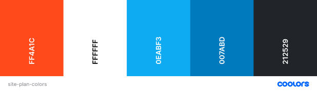

Color Scheme
I generated the colors on Coolers and I think it's a good combination for weather forecasting website, particularly the blue colors. The different shades of Blue are mainly for the menu and the Orange [ FF4A1C ] is for a call to action button. The [ 212529 ] is for the footer.
